A Sprint Bottleneck – Developer Driven Sprints
Table of Contents
Setting The Scene
A team has recently adopted scrum, they have both test and development resources from a previous test team and various development teams. The team is just starting to sprint, it’s estimated the backlog, which has been nicely prioritised by the PO and it is now ready for it’s first sprint, it even has a nicely coloured board ready:
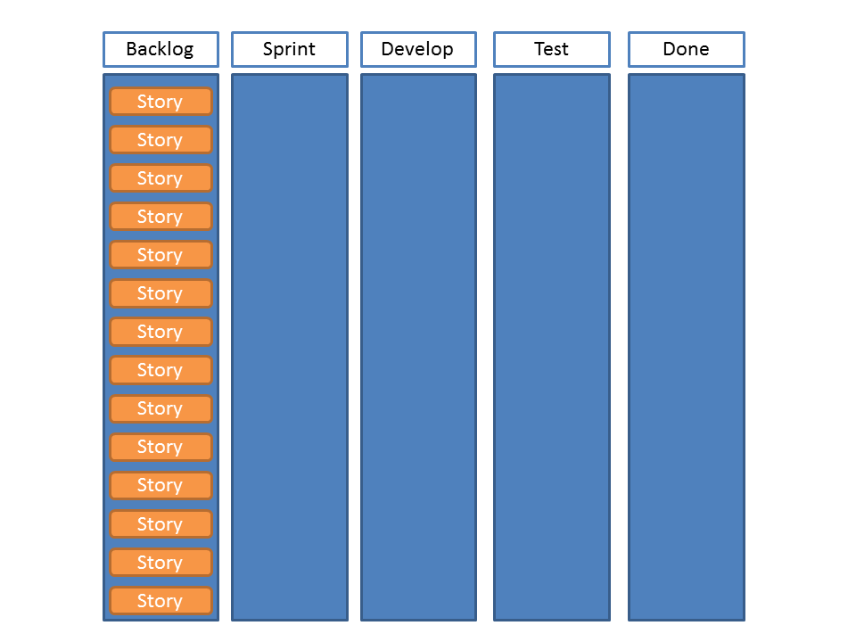
The developers reckon they can get through about 7 stories, which are conveniently all the same size. Testing reckon they can cope with this, so the sprint backlog is created:
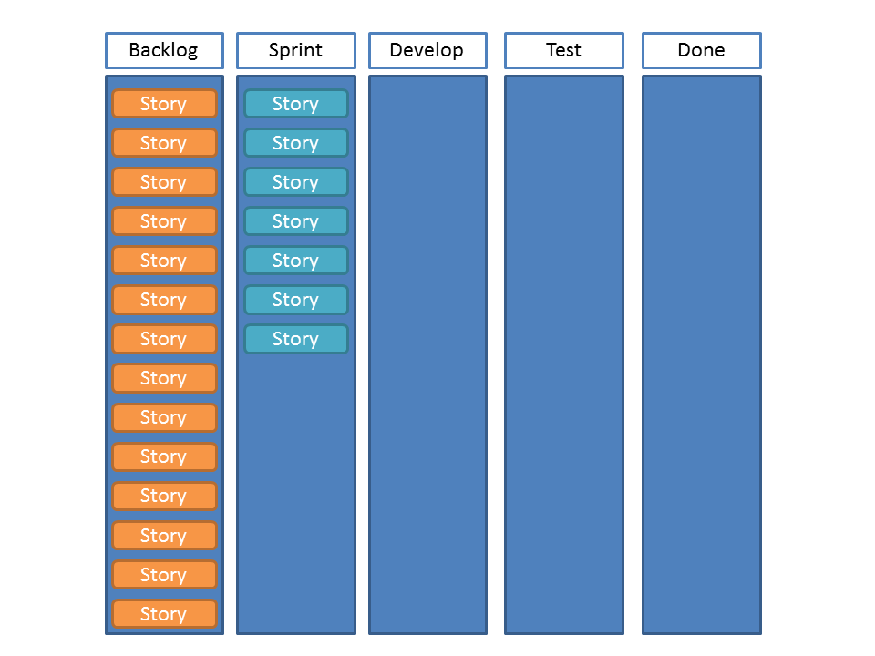
The sprint starts and development get on with some tasks, test sit in anticipation of some work:
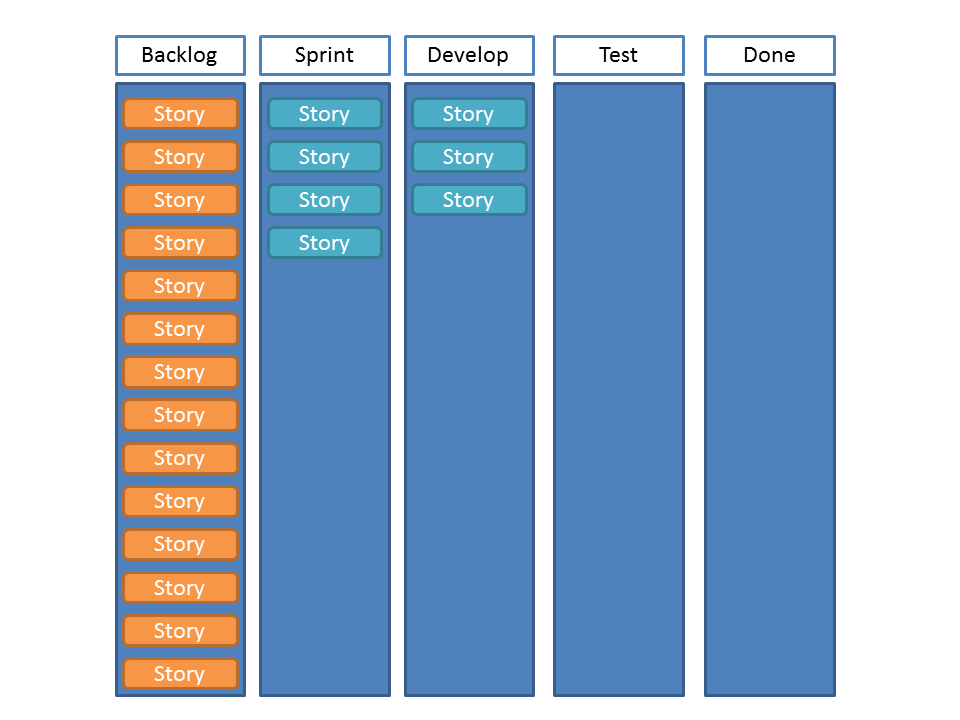
As the sprint goes on, development hands over to test and picks up some more items from the sprint backlog, they are getting through this faster than they thought:
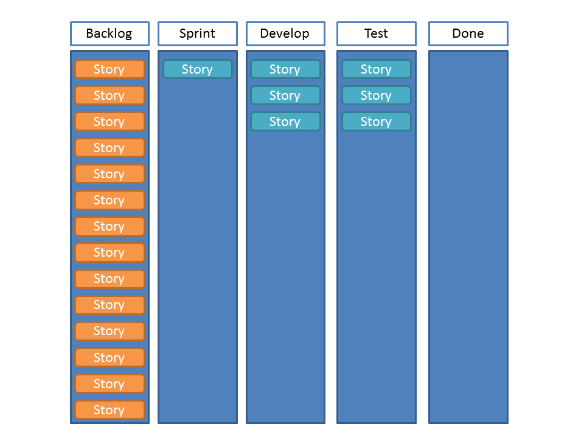
Testing start to get their teeth into the work, they quickly get through a couple of stories, which are signed off as Done by the PO. Smiles all round as business value is delivered. Even better, development are storming through work and have some spare time at the end of the sprint. a few more high priority stories are brought in. Testing recognise they probably need to up their speed to keep up, but everyone is encouraged to see how fast the work is getting completed:
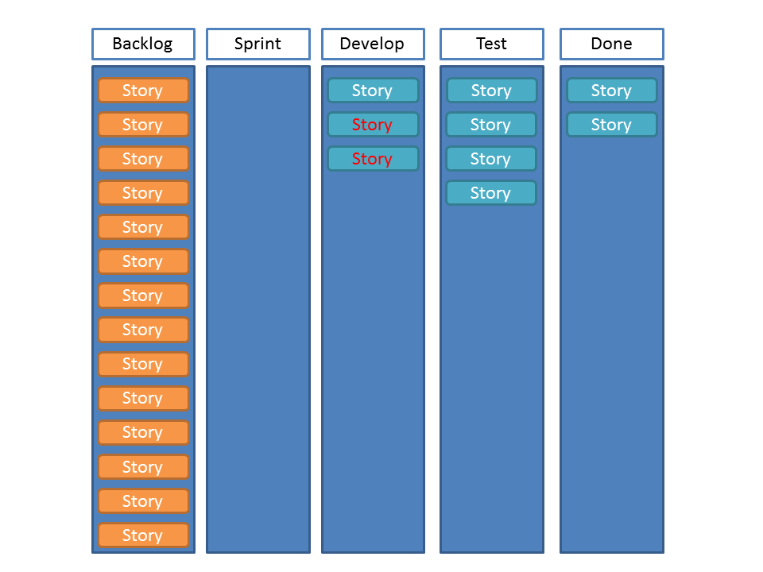
Development finish their stories just in time for the sprint to end, test have completed another 2 stories which have been signed off by the PO. However, they have a queue of 5 incomplete items. The velocity is 4 stories.
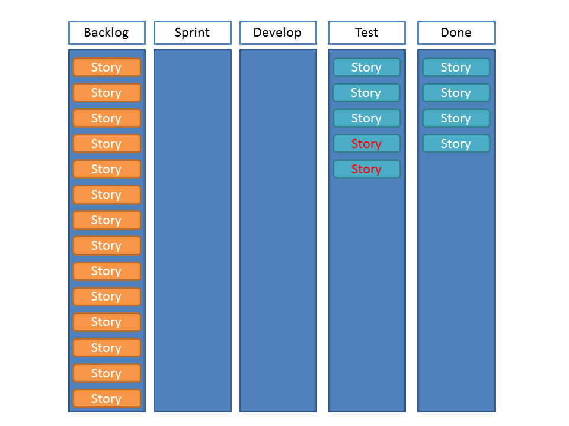
At the retrospective the developers are patted on the back, the testers are as well, but it is acknowledged that they are a bottle neck and testing needs to somehow be made more efficient. Testing say they will endeavour to clear their queue before development start throwing work over the fence. The sprint backlog is created, taking in 4 stories as this is the velocity from the previous sprint. There is a bit of confusion from the developers around how many should be taken into the sprint, but it is agreed that more can be added if neccessary later on:
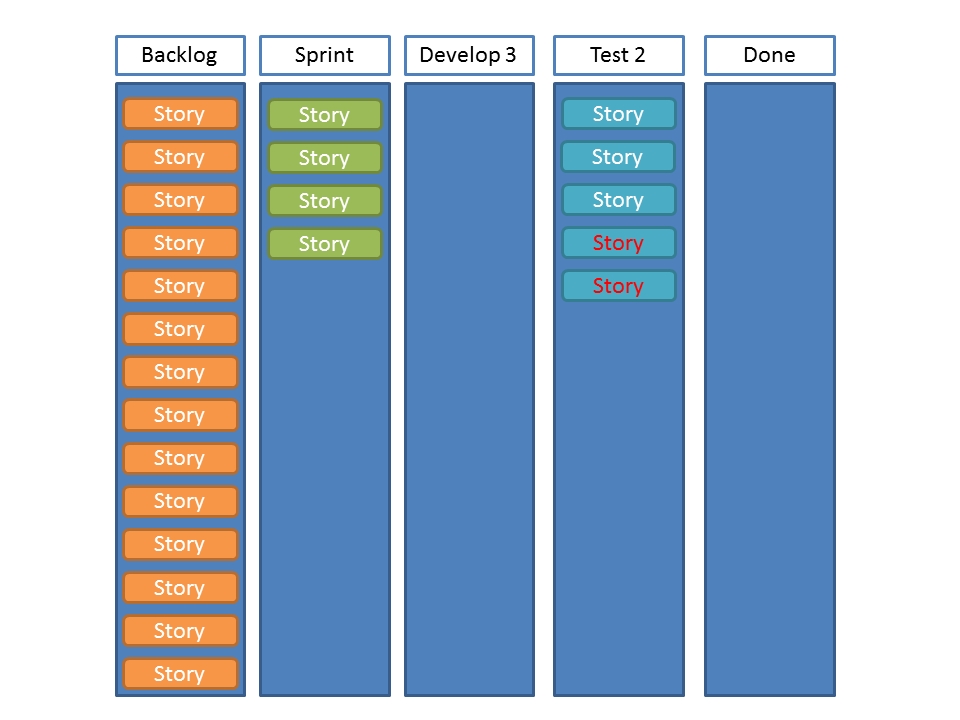
So development start on the stories and test start on their existing queue:
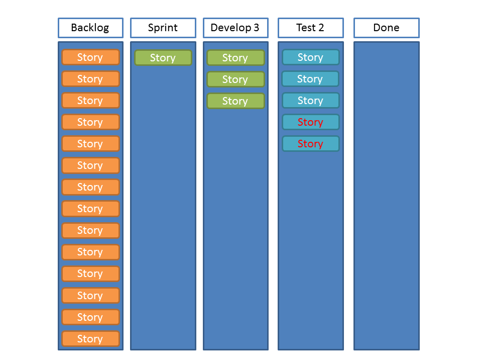
Development are still steaming through work, so no sooner have test completed a couple of stories, they have 3 more. Development are sat twiddling their thumbs, so it is agreed that they may as well take on some more work, what does it matter if test have a queue, as long as work is coming out Done at the other end in a predictable manner?
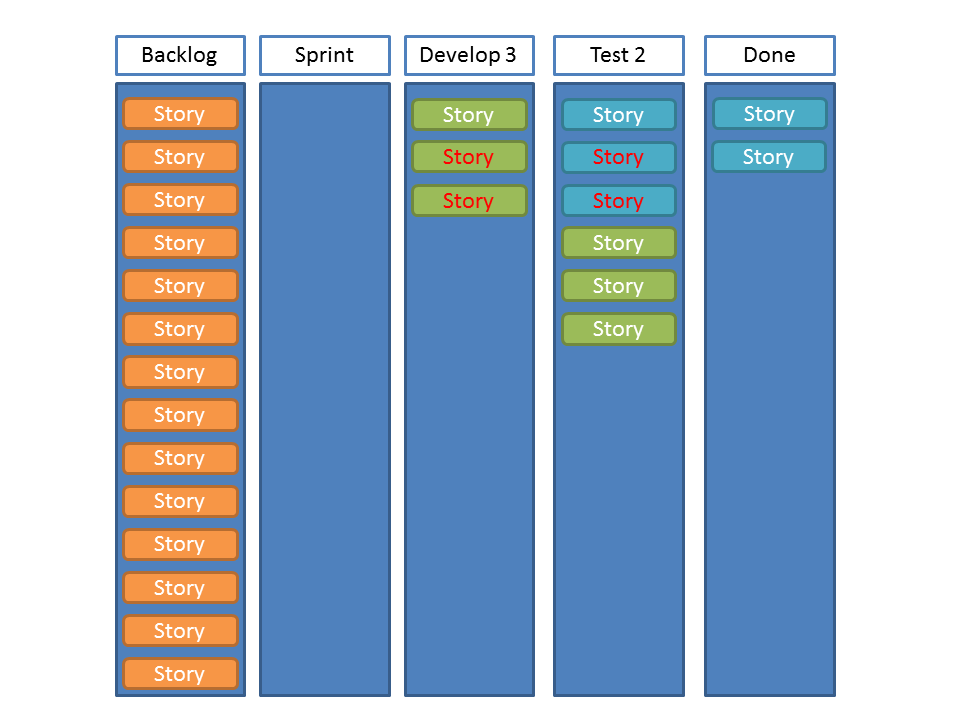
Test are starting to get a bit hacked off, pressure is on them to work faster and cut corners. Development may be steaming through work and doing more than expected, but test is feeling a bit isolated as developers take more stories and throw yet more over the fence:
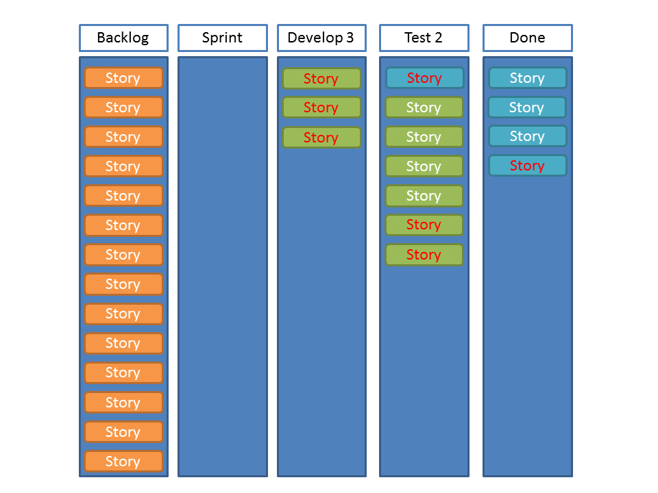
Finally, the sprint ends. Test have only managed to get 1 story done from the current sprint and have 8 in their queue of work. Velocity is up to 6:
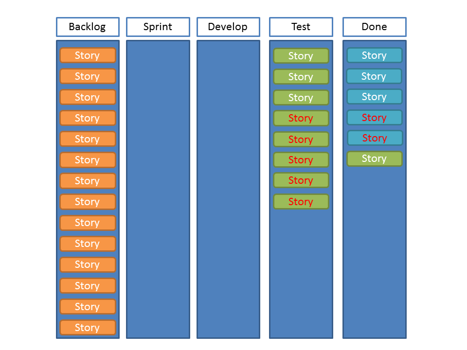
The situation has hit a major problem, test is only 2/3 of the capacity of development, but it has only taken 2 sprints for them to be a whole sprint behind
Time for a major retrospective
What happened
The sprint has ended, velocity is up so the PO is happy…. ish! Things are clearly not right. Here are my thoughts
One Team
The team is still suffering from a legacy view of development and test. The two teams are not only seen as operating in 2 separate phases of development, but are also treated differently. Development is driving the sprint more than test. Test are feeling development are just throwing work at them and it is also clear that development are being viewed by the PO and the business as a separate team that is somehow more of a success than testing. This is the first point that would need addressing. Development and test are not separate teams, but the same team.
Multi Disciplined Team and Members
Testers and Developers, whilst having specific skills and strengths should both be involved with testing and development. The team should be multi-disciplined and the team members should be multi-disciplined. In this case, development, perhaps, should have been involved with assisting testing, perhaps helping to automate the testing and improve the efficiency as a whole, which leads to:
Inspect and Adapt
There is a problem in that testing is taking longer than expected, why is this? what barriers are there? what can be automated, what distractions are getting in the way? How can team resource be best used in the sprint?
Ad-hoc testing by PO?
The PO is ulitmately responsible for accepting stories as Done, perhaps the PO could do ad-hoc testing after acceptance criteria have been met?